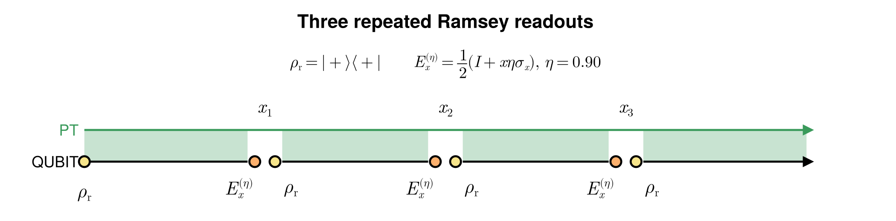
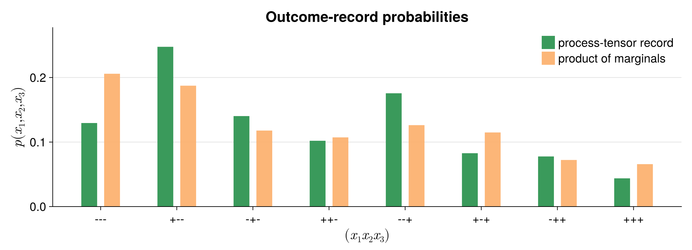

Ramsey readouts as a probe of bath memory
Can three readouts remain correlated when we reset the qubit after each one? We prepare a qubit, let a bosonic bath dephase it, then measure and prepare it again. Comparing the eight outcome records with independent-shot predictions tests what survives the reset in the environment.
scripts/ramsey_povm.jl generates the protocol and probability figures with the longer schedule described below.
Build the dephasing environment
In units with $\hbar=k_B=1$, the qubit has no free Hamiltonian:
\[H_S=0,\qquad H_E=\sum_k\omega_k b_k^\dagger b_k,\qquad H_{SE}=Z\sum_k g_k(b_k+b_k^\dagger).\]
Here $Z$ is the Pauli operator, with eigenvalues ±1. This coupling changes coherence without transferring population between its eigenstates. A usual oscillator counterterm is proportional to $Z^2=I$ and contributes only a constant. We sample the Ohmic spectral density on a midpoint grid:
\[J(\omega)=2\alpha\omega e^{-\omega/\omega_c},\qquad \Delta\omega=\omega_{\max}/N,\qquad \omega_k=(k-\tfrac12)\Delta\omega,\qquad g_k=\sqrt{J(\omega_k)\Delta\omega}.\]
using Logging
using ITensors
using ITensors.Ops: Trotter
using ProcessTensors
const N_BATH, LOCAL_DIM = 4, 3
const ALPHA, OMEGA_C, OMEGA_MAX = 0.20, 4.0, 20.0
const TEMPERATURE = 2.5
const DT, NSTEPS = 0.10, 7
const ACE_CUTOFF, ACE_MAXDIM = 1e-5, 32
system_sites = siteinds("Qubit", 1)
system = with_logger(() -> qubit_system(system_sites), NullLogger())ProcessTensors.QubitSystem
sites: 1
space: Liouville
site dims: 4
dissipative: false
Each mode starts in a normalized, truncated Gibbs state, independently of the other modes and the prepared qubit:
\[\rho_E=\bigotimes_k\rho_k^{\rm th},\qquad \rho_k^{\rm th}=\frac{\sum_{n=0}^{M-1}e^{-n\omega_k/T}|n\rangle\langle n|} {\sum_{n=0}^{M-1}e^{-n\omega_k/T}}.\]
In each coupling OpSum, site 1 is the oscillator and site 2 is the qubit.
Δω = OMEGA_MAX / N_BATH
frequencies = [(k - 0.5) * Δω for k in 1:N_BATH]
couplings = sqrt.(2ALPHA .* frequencies .* exp.(-frequencies ./ OMEGA_C) .* Δω)
bath_sites = siteinds("Boson", N_BATH; dim=LOCAL_DIM)
bath_liouville_sites = liouv_sites(bath_sites)
modes = BosonicMode[]
for k in eachindex(frequencies)
H_mode = OpSum() + (frequencies[k], "N", 1)
coupling = OpSum()
coupling += couplings[k], "A", 1, "Z", 2
coupling += couplings[k], "Adag", 1, "Z", 2
push!(modes, thermal_mode([bath_liouville_sites[k]], H_mode, TEMPERATURE;
coupling=coupling))
end
bath = with_logger(() -> bosonic_bath(modes), NullLogger())ProcessTensors.BosonicBath
modes: 4
space: Liouville
site dims: 9, 9, 9, 9
bath Liouville dimension: 6561
mode summary:
[1] BosonicMode(dim=9, H_terms=1, coupling_terms=2, n_max=8)
[2] BosonicMode(dim=9, H_terms=1, coupling_terms=2, n_max=8)
[3] BosonicMode(dim=9, H_terms=1, coupling_terms=2, n_max=8)
[4] BosonicMode(dim=9, H_terms=1, coupling_terms=2, n_max=8)
This small bath makes the instrument calculation inexpensive. It is a finite model, not a converged approximation to the Ohmic continuum.
process_tensor = build_process_tensor(
system; method=ACE(cutoff=ACE_CUTOFF, maxdim=ACE_MAXDIM, compression=:zipup_cpp),
environment=bath, dt=DT, nsteps=NSTEPS,
sys_alg=Trotter{2}(), combine_alg=Trotter{2}(), progress=false)
println((maximum_bond_dimension=maxlinkdim(process_tensor),))(maximum_bond_dimension = 32,)
Measure and reset: a causal break
Preparation and analysis pulses are absorbed into the reset state and an unsharp $X$ readout:
\[\rho_{\rm r}=|+\rangle\langle+|,\qquad E_x^{(\eta)}=\tfrac12(I+x\eta X),\qquad x=\pm1,\quad 0\le\eta\le1.\]
At unit visibility the detector is projective. At zero visibility it reports an independent fair coin, whatever the qubit state; it does not imply that the qubit itself is maximally mixed. The complete outcome operation is
\[\mathcal A_x(\rho)=\operatorname{Tr}(E_x^{(\eta)}\rho)\rho_{\rm r},\qquad \mathbf A_x=|\rho_{\rm r}\rangle\!\rangle\langle\!\langle E_x^{(\eta)}|.\]
The second expression is its Liouville matrix, using the Hilbert–Schmidt inner product. The reset is the output ket and the effect is the input bra. Summing the outcome maps gives a trace-preserving replacement channel:
\[\sum_x\mathcal A_x(\rho)=\operatorname{Tr}(\rho)\rho_{\rm r}.\]
observable_measurement supplies the effect on the preceding PT output; state_preparation supplies the state on the next PT input. Their product constructs this ProductInstrument, not a Lüders update without reset.
const ETA, OUTCOMES = 0.90, (-1, 1)
rho_reset = to_dm(MPS(system_sites, ["+"]))
effects = Dict(x => OpSum() + (0.5, "Id", 1) + (x * ETA / 2, "X", 1)
for x in OUTCOMES)
ramsey_instruments = Dict(
x => observable_measurement(effects[x]) * state_preparation(rho_reset)
for x in OUTCOMES)Dict{Int64, ProductInstrument{StatePreparation{MPO{Hilbert, Nothing}}, ObservableMeasurement{ITensors.LazyApply.Sum{ITensors.LazyApply.Scaled{ComplexF64, ITensors.LazyApply.Prod{ITensors.Ops.Op}}}}}} with 2 entries:
-1 => ObservableMeasurement{Sum{Scaled{ComplexF64, Prod{Op}}}}(sum(
0.5 Id(1,)
-0.45 X(1,)
), Index[], 0) * StatePreparation{MPO{Hilbert, Nothing}}(1-element MPO{Hilbert}
site dims: 2
link dims: none
maxlinkdim: 1
combiners: none
tensors:
[1] ((dim=2|id=183|"Qubit,Site,n=1")', (dim=2|id=183|"Qubit,Site,n=1"))
, Index[], 1)
1 => ObservableMeasurement{Sum{Scaled{ComplexF64, Prod{Op}}}}(sum(
0.5 Id(1,)
0.45 X(1,)
), Index[], 0) * StatePreparation{MPO{Hilbert, Nothing}}(1-element MPO{Hilbert}
site dims: 2
link dims: none
maxlinkdim: 1
combiners: none
tensors:
[1] ((dim=2|id=183|"Qubit,Site,n=1")', (dim=2|id=183|"Qubit,Site,n=1"))
, Index[], 1)On a correlated qubit–bath state, the same local operation gives
\[(\mathcal A_x\otimes\mathcal I_E)(\rho_{SE}) =\rho_{\rm r}\otimes\widetilde\rho_E^{(x)},\qquad \widetilde\rho_E^{(x)}=\operatorname{Tr}_S[(E_x^{(\eta)}\otimes I_E)\rho_{SE}].\]
The bath operator is unnormalized: its trace is the outcome probability. The qubit is reset and disentangled from the bath, but the conditional bath state can still depend on the record. Resetting the qubit does not reset the bath.

Contract the eight records
Each bath core propagates one time step. A measure-and-reset at slot $s$ closes the preceding output after $s$ propagations, then prepares the next input:
\[t_j=s_j\Delta t,\qquad \tau_j=t_j-t_{j-1},\qquad t_0=0.\]
The documentation uses slots (2, 4, 6), giving equal waits of 0.2. The companion uses (4, 8, 12), step size 0.15, 14 cores, and bond cap 512: its waits are 0.6. The terminal trace closes the remaining evolution without conditioning on it.
const READOUT_STEPS = (2, 4, 6)
readout_times = collect(READOUT_STEPS) .* DT3-element Vector{Float64}:
0.2
0.4
0.6000000000000001Start with one explicit record, $(+,-,+)$. Unused slots keep the identity.
sequence = default_schedule(process_tensor)
add!(sequence, state_preparation(rho_reset), 0)
add!(sequence, ramsey_instruments[1], READOUT_STEPS[1])
add!(sequence, ramsey_instruments[-1], READOUT_STEPS[2])
add!(sequence, ramsey_instruments[1], READOUT_STEPS[3])
add!(sequence, trace_out(), process_tensor.nsteps)
example_probability = evaluate_process(process_tensor, sequence; progress=false)0.13213324288465297 - 1.0899739788532929e-16imWith joint system–bath evolution $\mathcal U_j$ over each waiting interval, the contraction evaluates
\[p(\boldsymbol{x})=\operatorname{Tr}_{SE}\!\left[ (\mathcal A_{x_3}\otimes\mathcal I_E)\mathcal U_3 (\mathcal A_{x_2}\otimes\mathcal I_E)\mathcal U_2 (\mathcal A_{x_1}\otimes\mathcal I_E)\mathcal U_1 (\rho_{\rm r}\otimes\rho_E)\right].\]
Repeat for all eight records, reusing the same PT. These are joint branch probabilities; do not normalize a branch after each readout.
function branch_probability(record)
sequence = default_schedule(process_tensor)
add!(sequence, state_preparation(rho_reset), 0)
for (step, outcome) in zip(READOUT_STEPS, record)
add!(sequence, ramsey_instruments[outcome], step)
end
add!(sequence, trace_out(), process_tensor.nsteps)
value = evaluate_process(process_tensor, sequence; progress=false)
@assert isfinite(value) && abs(imag(value)) < 1e-7
return real(value)
end
records = vec(collect(Iterators.product(OUTCOMES, OUTCOMES, OUTCOMES)))
probabilities = branch_probability.(records)
normalization_error = abs(sum(probabilities) - 1)
@assert minimum(probabilities) >= -1e-7
@assert normalization_error < 5e-3What survives the reset?
The bars compare the joint distribution with the product of its own marginals:
\[p_j(x)=\sum_{\boldsymbol{x}:x_j=x}p(\boldsymbol{x}),\qquad q(\boldsymbol{x})=\prod_{j=1}^3 p_j(x_j),\qquad D=\tfrac12\sum_{\boldsymbol{x}}|p(\boldsymbol{x})-q(\boldsymbol{x})|.\]
For normalized, nonnegative probabilities, $D$ is the total variation distance from independent records. We retain raw numerical weights and print their normalization error alongside the residual, rather than clipping or renormalizing away contraction errors.
Columns contain P(-) and P(+) for each round; retain the raw PT weights.
marginals = zeros(3, 2)
for (record, probability) in zip(records, probabilities)
for round in 1:3
marginals[round, record[round] == -1 ? 1 : 2] += probability
end
end
independent_probabilities = [
prod(marginals[j, record[j] == -1 ? 1 : 2] for j in 1:3)
for record in records]
factorization_residual = sum(abs.(probabilities .- independent_probabilities)) / 2
println((normalization_error=normalization_error, minimum_probability=minimum(probabilities),
factorization_residual=factorization_residual))(normalization_error = 0.00062406987317698, minimum_probability = 0.021437183780493144, factorization_residual = 0.03287191016094343)

In the companion result, the $(+,-,-)$ and $(-,-,+)$ records are enhanced relative to the product prediction, while $(-,-,-)$ is suppressed. Thus a bias toward either detector outcome alone cannot explain the bars: the orange distribution already includes each round's individual bias. Their mismatch reveals information in the combinations of outcomes.
With the same reset for every outcome, fixed controls, and no detector memory, a memoryless process factorizes even if the intervals differ. A discrepancy that survives numerical convergence therefore witnesses bath-mediated temporal memory in this protocol. It does not establish entanglement or uniquely quantum memory; classical environmental memory can also correlate records. Conversely, agreement would not prove the whole process Markovian: this readout may miss memory.
These edits test whether the record correlations survive changes in the detector, timing, and numerical resolution.
- Set
ETA = 0: all eight records should approach probability1/8, even though the bath can retain memory. SetALPHA = 0: records should factorize, with a plus-outcome probability of(1 + ETA)/2in every round. - Change the readout spacing. For equal waiting times of
m * DTfrom the initial preparation, use slots(m, 2m, 3m)andNSTEPS > 3m. - Reduce
DTwhile preserving the physical readout times, lowerACE_CUTOFF, and increaseACE_MAXDIM. The normalization error should be much smaller than the factorization residual before interpreting it physically. - Increase
LOCAL_DIMand refineN_BATHat fixed frequency range. Do the enhanced records persist beyond this small, truncated bath?